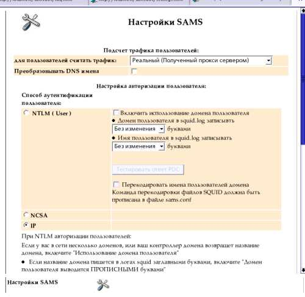

The user with Administrator rights
In the SAMS default included user Admin. This user can be set setttings of SAMS and seen
statistic reports all users of SAMS.
The user "Auditor"
In the SAMS default included user Auditor. This user can be seen statistic reports all users of SAMS.
The SAMS users
The users, registered in the SAMS, can be seen own statistic reports.
Использование графического интерфейса
Для доступа к окну управления пользователями, имеющими права
администратора системы, через удаленный интерфейс необходимо:
Click link SAMS Administration in the left frame
! This options is aviable if this user have Administrator rights!

The SAMS settings
| Click on the icon to the bottom frame
! This options is aviable if this user have Administrator rights! |
Create new user with Administrator rights
| Click on the icon to the bottom frame.
! This options is aviable to the Admin user! |
Change password of the user with Administrator rights
| Click on the icon to the bottom frame.
! This options is aviable if this user is owner or the Admin user! |
Delete users with Administrator rights
| Click on the icon to the bottom frame.:
! This options is aviable to the Admin user! |